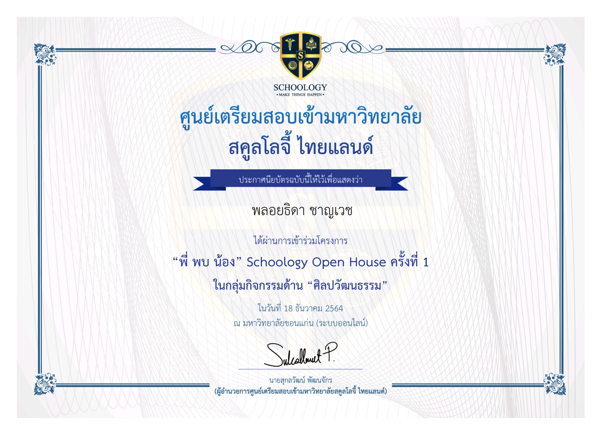

แฟ้มสะสมผลงาน
ชื่อ : นางสาว พลอยธิดา ชาญเวช
วันเกิด 5/12/2547
อายุ : 17 ปี
หมู่เลือด : B
สัญชาติ : ไทย
ศาสนา : ไม่มี
สถานศึกษา : โรงเรียนโชคชัยสามัคคี
แผนการเรียน : วิทยาศาสตร์-คณิตศาสตร์
อาชีพในอนาคต : Game Developer หรือ Software Engineer
My Family
บิดา : นาย มานะ ชาญเวช
มารดา : นาง นราวดี ชาญเวช
พี่ชาย : นาย พัตธกร ชาญเวช
Address
บ้านเลขที่ 138 หมู่ 2 ต.โชคชัย อ.โชคชัย จ.นครราชสีมา 30190
Number
0638649095
Motto
อย่าทิ้งความฝันเพียงเพราะไม่ถูกใจป้าข้างบ้าน
ดิฉันรู้สึกหลงไหลในเทคโนไลยีและมีบุลคลต่างๆในโลกออนไลน์ที่ดิฉันรู้สึกชื่นชอบและยกย่องให้เป็นต้นแบบไม่ว่าจะเป็น 9arm หรือ BorntoDev แต่สิ่งที่ทำให้ดิฉันมีความสนใจมากจริงต้องย้อนกลับไปเมื่อดิฉันศึกษาอยู่มัธยมต้น คือการแข่งขันหุ่นยนต์ ตอนนั้นเมื่อดิฉันได้รับรู้ว่ามีการรับสมัครผู้ที่สนใจในการแข่งขันนี้ ดิฉันสามารถตัดสินใจได้อย่างไม่ลังเล แล้วจึงได้เริ่มฝึกซ้อมต่างๆแต่สิ่งที่ต้องทำคืออย่างแน่นอนนั่นคือการเขียนโปรแกรม เมื่อได้ลองทำกับตัวเองแล้วดิฉันรู้สึกทันทีว่านี่แหละคือสิ่งที่ดิฉันชอบ ดังนั้นดิฉันจึงตามหาคณะที่ดิฉันรู้สึกชื่นชอบจนมาเจอคณะนี้จากรุ่นพี่ที่ศึกษาอยู่ในสำนักนี้ได้โพสต์เกี่ยวกับสำนักศาสตร์และศิลป์ดิจิทัล สาขาเทคโนโลยีดิจิทัลของมหาวิทยาลัยเทคโนโลยีสุรนารี จึงทำให้ดิฉันตัดสินใจอย่างไม่ลังเลที่จะเลือกเรียนสำนักนี้
ดิฉันมีเป้าหมายและความมุ่งมั่นในตอนเรียนสำนักหลักสูตรศาสตร์และศิลป์ดิจิทัล สาขาเทคโนโลยีดิจิทัล ไว้ว่า จะตั้งใจเรียนให้ได้เกรดรวมประมาณ3.00และใช้เวลาว่างในการศึกษาเกี่ยวกับการเขียนโปรแกรมและคอยฝึกฝนพัฒนาตนเองให้รอบด้าน หรือทำกิจกรรมต่างๆเพื่อเก็บเกี่ยวประสบการณ์ให้ได้มากที่สุด
เมื่อสำเร็จการศึกษาดิฉันตั้งใจจะพัฒนาตนเองไปเรื่อยก่อนประมาณ1-2ปีเพื่อสมัครบรรจุเป็น Game Developers หรือ Software Engineer เพื่อเก็บเกี่ยวประสบการณ์มากมายและทำงานอย่างมีคุณภาพ
ดังนั้น เพื่อให้ได้ทำตามฝันและเป้าหมายของดิฉันเพราะที่นี่เปรียบเสมือนโลกใบใหม่ที่เต็มเปี่ยมไปด้วยคุณภาพและความทันสมัย ดิฉันจึงสมัครเข้าเรียนสำนักหลักสูตรศาสตร์และศิลป์ดิจิทัล สาขาเทคโนโลยีดิจิทัล มหาวิทยาลัยเทคโนโลยีสุรนารี โปรดกรุณาพิจารณารับดิฉันเข้าเป็นนิสิตด้วยนะคะ ขอบพระคุณเป็นอย่างสูง
ชั้นอนุบาลศึกษาปีที่ 1-3
โรงเรียนอนุบาลบัณฑิตน้อย
ชั้นประถมศึกษาปีที่ 1-6
โรงเรียนโชคชัยพรมบุตรบริหาร
ชั้นมัธยมศึกษาศึกษาตอนต้นปีที่ 1-3
โรงเรียนโชคชัยสามัคคี
ชั้นมัธยมศึกษาตอนปลายปีที่ 4
โรงเรียนโชคชัยสามัคคี
เกรดเฉลี่ยรวม4ภาคเรียน : 2.80
ได้รับหน้าที่เป็น "หัวหน้าฝ่ายอัฒจันทร์ของคณะ"
ออกแบบพร็อพเชียร์ลีดเดอร์ของคณะสี
ออกแบบคัทเอาท์หรือฉากของอัฒจันทร์
ผลงานของพร็อพเชียร์หลีดเดอร์เมื่อเสร็จแล้ว
ผลงานของอัฒจันทร์เมื่อเสร็จแล้ว
Web Logo Design
รางวัลรองชนะเลิศอันดับที่ 1 "การแข่งขันหุ่นยนต์ระดับสูง ม.1-3
เข้าร่วมกิจกรรม "พี่ พบ น้อง" Schoology Open House (ออนไลน์) ด้านศิลปะวัฒนธรรม
เข้าร่วมกิจกรรม "พี่ พบ น้อง" Schoology Open House (ออนไลน์) ด้านการพัฒนาตนเอง
เข้าร่วมกิจกรรม "พี่ พบ น้อง" Schoology Open House (ออนไลน์) ด้านจิตอาสา
เข้าร่วมกิจกรรม "พี่ พบ น้อง" Schoology Open House (ออนไลน์) ด้านกีฬา
เข้าร่วมกิจกรรม "พี่ พบ น้อง" Schoology Open House (ออนไลน์) ด้านวิชาการ